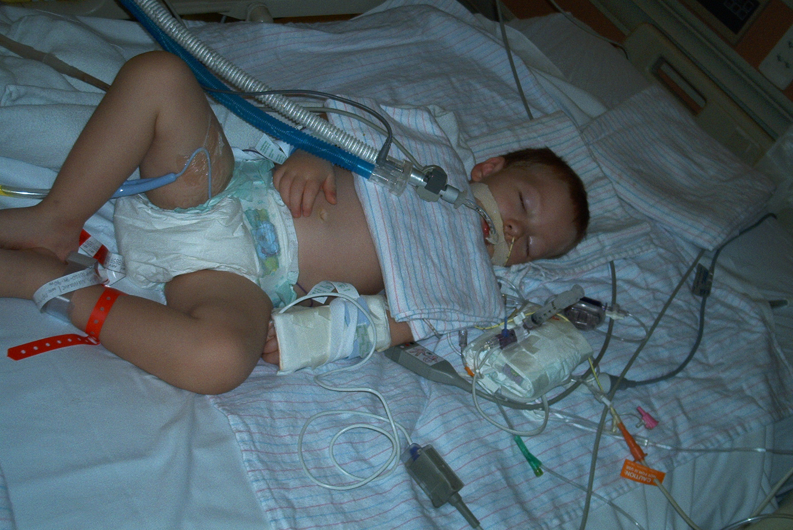

Pneumonia ( নিউমোনিয়া )
নিউমোনিয়া হলো ফুসফুসের প্রদাহজনিত একটি রোগ। সাধারণত ভাইরাস, ব্যাকটেরিয়া, ছত্রাক সংক্রমনের কারণে নিউমোনিয়া হয়। আর নিউমোকক্কাল নিউমোনিয়া স্ট্রেপটকক্কাস নিউমোনি’ বা হেমোফাইলাস ইনয়ুযেকি নামের জিবানু দ্বারা সংঘটিত নিউমোনিয়ার নাম ‘নিউমোকক্কাল নিউমোনিয়া’।সাধারনত দুই বছরের কম বয়সী শিশুরা এ রোগে বেশী আক্রান্ত হয় । যা বাহকের শ্বাস নালীর উর্র্ধ্বভাগে এ রোগের জীবানু বাসা বেঁধে থাকে।
সুতরাং বাহক অথবা আক্রান্ত ব্যাক্তির হাঁচি কাশি এমনকি শ্বাস প্রশ্বাসের মাধ্যমে কাছে অবস্থানরত মানুষেরা সহজেই আক্রান্ত হতে পারে।আমরা জানি ফুসফুসের ভিতর ছোট ছোট কত গুলী এলভিওলাসের সমষ্টির ধারা তৈরি যা স্পঞ্জের মতো নরম ও স্থিতি স্থাপক, নিউমোনিয়া বা ফুসফুসে প্রদাহ হলে ফুসফুসের এই এলভিওলাইসগুলো স্পঞ্জের মতো আর নরম থাকে না, তখন যকৃত বা কলিজার মতো শক্ত হয়ে যায়। ফলে শ্বাস প্রশ্বাসের সময় সঙ্কোচন ও প্রসারণে বাধা পায় এবং শ্বাস কষ্ট হয়। সব বয়সের মানুষেরই নিউমোনিয়া হতে পারে। তবে শিশু ও বার্ধক্যদের বেলায় নিউমোনিয়া বেশি হয়। কারন এদের শরীরের ইমিউনিটি পাওয়ার দুর্বল থাকে বলে – এ ভাবে একাধিক অঞ্চলের অ্যালভিওলাইগুলি জিবানুর দ্বারা সংক্রামিত হয় তাড়া তাড়ি -তখন ফুসফুসের ভিলাই গুলিতে পানি জমে গিয়ে ফুসফুসের কার্যক্ষমতা কমিয়ে দিতে পারে যাকে কনজেশন জাতিয় নিউমোনিয়াযা বলা হয়
-ফুসফুসে বিভিন্ন ধরনের ব্যাকটেরিয়াল, ভাইরাল, ক্যালামিডিয়াল, ইস্ট, ছত্রাক বা এলার্জি এবং প্রোটোজোয়ার অথবা ক্যামিক্যাল পদার্থের সংস্পর্শে বা আক্রমণে – নিউমোনিয়া হতে পারে ।
কিভাবে নিউমোনিয়ার সংক্রমণ ঘটে?ফুসফুসে যে প্রাথমিক বা প্রাইমারি নিউমোনিয়া হয়, তা মুলত পরিবেশ থেকে জীবাণু শ্বাস গ্রহণের মাধ্যমে ফুসফুসে প্রবেশ করে বা সংক্রামিত ব্যক্তিদের কাশির সময় তরলকণিকা শ্বাস গ্রহণের মাধ্যমে ফুসফুসে প্রবেশ করে ৷ এটি জনসম্প্রদায় থেকে আসে তাই অতিরিক্ত ভিড় ও শীত ঋতুতে এই রোগের প্রকোপ বাড়ে ৷ আবার কিছু কিছু নিউমোনিয়ার সংক্রমণ ঘটে নিশ্বাসের সঙ্গে নিউমোনিয়ার জীবাণুযুক্ত অতি ক্ষুদ্র তরলকণিকা গ্রহণের ফলে৷ এই তরলকণিকা গুলি বাতাসে মিশে যায়, তারপরে জীবাণুগুলি ফুসফুসে প্রবেশ করে (এই জীবাণুগুলি ব্যাকটেরিয় বা ছত্রাক বা অন্য রাসায়নিক বা যন্ত্রণাদায়ক বস্তুকণিকা হতে পারে ) এবং তারপরে অ্যালভিওলাইয়ে ঢুকে গিয়ে প্রদাহের সৃষ্টি করে- সুস্থ অ্যালভিওলাইয়ে বিজাতীয় বস্তুর উপস্থিতি স্বাভাবিক ভাবেই সেটি তাড়িয়ে দেবার জন্য একটি ইমিউন প্রতিক্রিয়ার জন্ম দেয়৷ এর ফলে ফুসফুসে ব্যাকটেরিয়া ও শ্বেত রক্ত কণিকা সহ তরল শ্লেষ্মা জমা হয়৷ তার ফলে ফুসফুসের মূল অংশে কনজেশন ও প্রদাহ সৃষ্টি হয় যাকে এবং একেই চিকিৎসকরা নিউমোনিয়া বলে থাকেন
অথবা , যাদের প্রতিরোধশক্তি কম এবং শারীরিক চালনব্যবস্থা ত্রুটিপূর্ণ অধিকাংশ ক্ষেত্রেই তাদেরই শ্বাসনালীর উপরিভাগের সংক্রমণ বা সামগ্রিক কোন রোগের মাধ্যমে নিউমোনিয়া হয়ে থাকে৷ মুখ, গলা, বা নাকে স্বাভাবিকভাবে উপস্থিত ব্যাকটেরিয়া কোনোভাবে ফুসফুসে ঢুকে গেলে নিউমোনিয়া হয়৷ যারা অন্য কোন রোগের প্রকোপে দুর্বল হয়ে পড়েন, তাদের বেলায় জীবাণুগুলি খুভ তাড়া তাড়ি ফুসফুসের বায়ুথলিগুলিতে আশ্রয় নেয় ও দ্রুত বংশবৃদ্ধি করতে থাকে৷ শরীর সংক্রমণটির সঙ্গে লড়তে থাকায় ফুসফুসের এই এলাকাটি তখন তরল ও পূঁজে ভরে যায়৷ যা পরবর্তীতে মারাত্মক অবস্তা ধারন করে
লক্ষণ ও উপসর্গগুলোনিউমোনিয়া আক্রান্ত রোগীর প্রথমে সর্দি লাগার লক্ষণ দেখা যায় পরে জ্বর ১০৩-১০৪ ফারেনহাইট ও কাঁপুনি দিয়ে শীত করা অনুভব হতে পারে , —বমি ( অনেক সময় না থাকতে পারে ) – খিচুনি ভাব- কফ বা -শুষ্ক কফ- লোকালাইজড (চেস্ট পেইন) বুক ব্যথা- রোগীদের শ্বাস প্রশ্বাসের গতি বেড়ে যাওয়া – শিশুর স্বাভাবিক শ্বাস প্রশ্বাসের গতি ২৫-৪০ বার/মিনিট ( শিশুদের বেলায় খুভি গুরুত্ত পূর্ণ বিধায় – ইহা সর্দি জর না নিউমোনিয়া বুজবেন কিভাবে ? – প্রথমত সর্দিকাশি, জ্বরের সঙ্গে শিশু যদি খুব দ্রুত নিঃশ্বাস নিতে শুরু করে, দুই বছরের কম বয়সের শিশু যদি প্রতি মিনিটে ৫০ বারের বেশি নিঃশ্বাস নেয় এবং দুই বছরের বেশি বয়সের শিশু যদি প্রতি মিনিটে ৪০ বারের বেশি নিঃশ্বাস নেয়, তাহলে বুঝতে হবে এটা সাধারণ সর্দিজ্বর নয়।দ্বিতীয়ত, শান্ত থাকা অবস্থায় শিশুর যদি নিঃশ্বাস নিতে কষ্ট হয়, নিঃশ্বাস নিতে গেলে ঘড়ঘড় আওয়াজ হয়, তাহলে তা নিউমোনিয়ার লক্ষণ ভাবতে হবে – সাথে পেট ও বুকের নামা উঠা অন্য সময়ের চাইতে খুভ বেশি ) -রোগীর নাড়ীর গতি বৃদ্ধি পায়– রোগীর শ্বাস কষ্ট হয়, শ্বাস প্রশ্বাসের সময় নাকের পাতা উঠা নামা করে–রোগীর শ্বাস প্রশ্বাসের সাথে গর গর শব্দ হয়–. রোগ মারাত্মক হলে শরীরে অক্সিজেনের অভাবে চামড়া নীল হয়ে যায়
চিকিৎসা :হা অবশ্যই এন্টিবায়োটিক নিউমোনিয়ার প্রধান ঔষধ – কিন্তু তা নির্ভর করবে আপনার কোন ধরনের বেক্টোরিয়া /ভাইরাস আক্রমণ করছে তা বুজা র উপর – সাধারনত সেপালস্পিরিন খুভি ভাল রেজাল্ড দিতেছে বর্তমানে ( তবে ইহা ও আগামিতে হুমেন ইমুইনেজশন পরিবরতনের কারনে ঠিক রিজাল্ড না ও পেতে পারেন ) cephalosporin, is newly approved- সাধারনত ইহা ৭/৮ দিনে পূর্ণ সুস্ত হওয়ার কথা- তার পর ও রোগটি ভাইরাস না বেক্টোরিয়া জনিত হয়েছে তা বুজে বেবস্তা নিলে ৯৯% সম্বাভনা ভাল হয়ে যাবেন একেবারে নিশ্চিত
---------------------------------------------------আরও জানুন ...